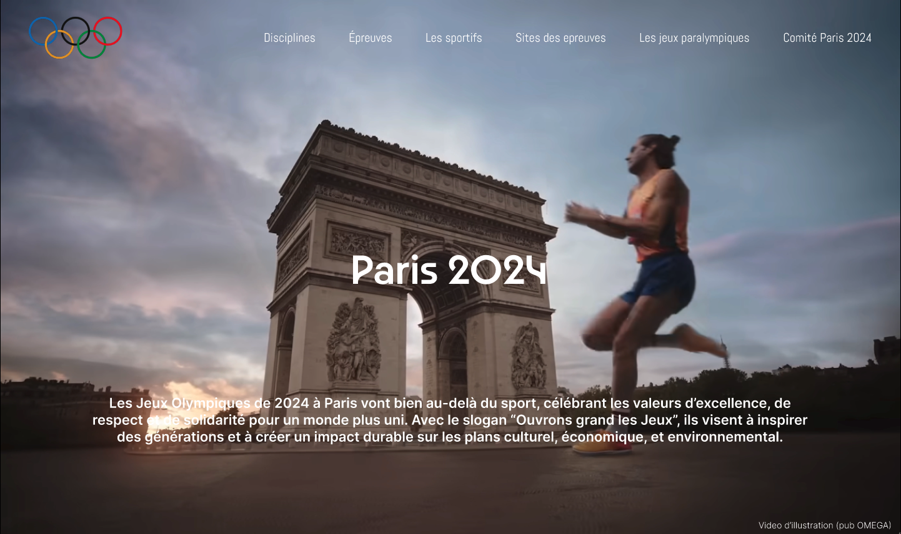

Je suis passionné d'informatique et d'innovation, j'ai commencé mon
aventure dans les Landes avec un diplôme en Systèmes Numériques au
lycée Saint Joseph à Gabarret avant de me lancer dans
un BUT Informatique en Bretagne à l'IUT de Lannion.
Toujours à l'affût de nouvelles connaissances, je m'intéresse autant
à la technique qu'à l'aspect business des projets. J'ai eu la chance
de concrétiser certaines de mes idées, notamment en remportant la
médaille d'or du Concours Lépine avec notre
chandelier connecté. Une expérience incroyable qui
m'a permis de développer mes compétences en gestion de projet, de
l'idée à la réalisation.
Lycée Saint Joseph à Gabarret 2021-2024Médaille d'or au concours Lépine 2024IUT de Lannion 2024-2027
Mes objectifs
Je me fixe plusieurs objectifs ambitieux :
Maîtriser les outils technologiques pour créer des solutions
performantes et accessibles.
Allier développement et entrepreneuriat pour proposer des produits
innovants et disruptifs.
M'améliorer constamment en apprenant de nouvelles compétences et
en collaborant avec des experts du domaine.
Soft Skills
Au-delà des compétences techniques, je mise sur des qualités
essentielles :
Adaptabilité : Je sais m'ajuster aux nouveaux contextes et
technologies.
Rigueur : Chaque ligne de code et chaque choix technique comptent.
Esprit d'équipe : La collaboration est la clé des projets réussis.
Vision business : Transformer une idée en un projet viable et
innovant.
Ce qui me motive
Je suis animé par l'envie d'innover et de créer des solutions qui
ont un impact. Dans mon temps libre, j'aime aussi la pêche, une
activité qui m'apprend la patience et la persévérance, des valeurs
que j'applique dans mes projets.
Envie de travailler avec moi ?
Je suis toujours à la recherche de nouvelles opportunités.
téléchargez mon CV et
contactez moi.
Projets
Chandelier Connecté
En collaboration avec Benoît Mirambeau et mon lycée, j’ai
codéveloppé un chandelier connecté, présenté au Concours Lépine
2024, où nous avons remporté l’or dans la catégorie "univers
connecté". J’ai conçu le site web, une application mobile,
contribué au développement du micro-logiciel et de l'électronique pour faire fonctionner
les prototypes.
En savoir plus
Site JO Paris 2024 (BUT info)

Dans le cadre de mon BUT informatique, j’ai réalisé un projet
portant sur la création d’un site fictif dédié aux JO Paris 2024. Ce
travail m’a permis de répondre à un besoin client de manière
complète, en passant par l’analyse des exigences, la conception, le
développement et la mise en ligne. J’ai également appliqué des
méthodologies de gestion de projet pour assurer une livraison
conforme aux attentes.
Jeu snake dans le terminal
Dans le cadre de mon BUT informatique, j’ai réalisé un projet
portant sur la création du jeu snake dans le terminal. Dans cette
version, il y a des obstacles ainsi que des portes dans les bordures
du plateau qui sont des raccourcis.